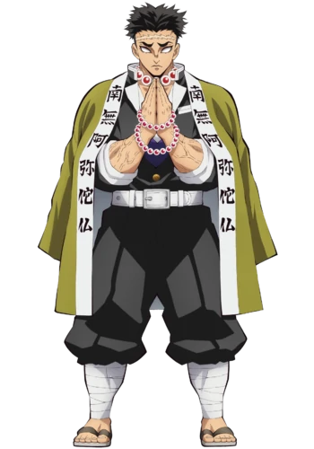

Week 3 | Bio page
About Me
Enjoying my time playing overweight and carrying Noah through ranked and scrims. Playing the drums and guitar are my biggest past time as well as watching anime. I also enjoy cooking/baking as well as wasting time staring into the abyss.
